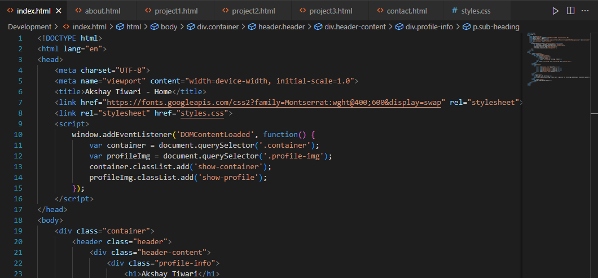
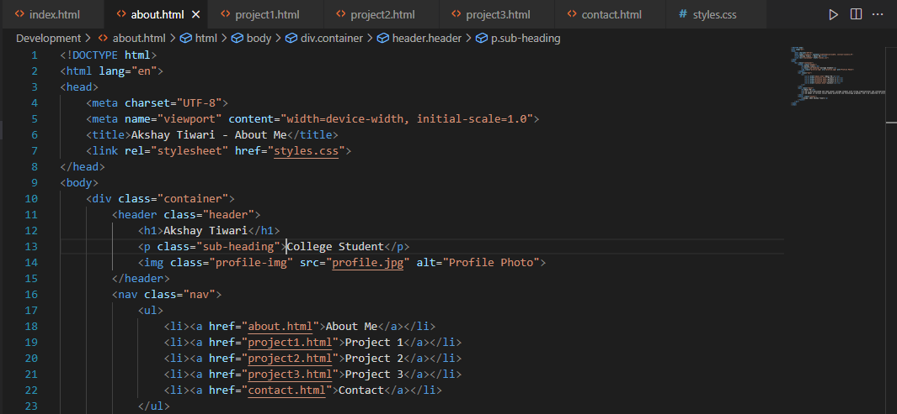
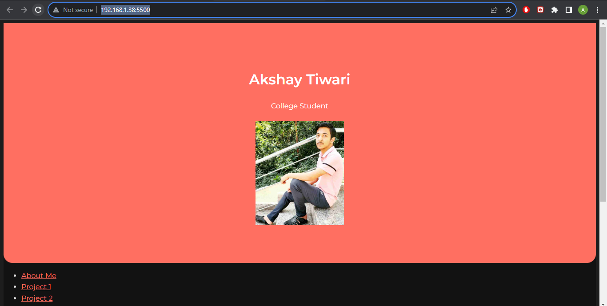

Project 3: Crafting My Personal Portfolio Website



In Project 3, I embarked on the exciting journey of creating my personal portfolio website. Leveraging my skills in web design and development, I meticulously designed each section to reflect my personality, showcase my projects, and provide a platform to connect with others. Through careful consideration of typography, color palettes, and layout, I strived to make my portfolio not only visually appealing but also informative and user-friendly. By integrating HTML, CSS, and a touch of JavaScript, I brought my vision to life and established a unique online presence that highlights my achievements and aspirations.